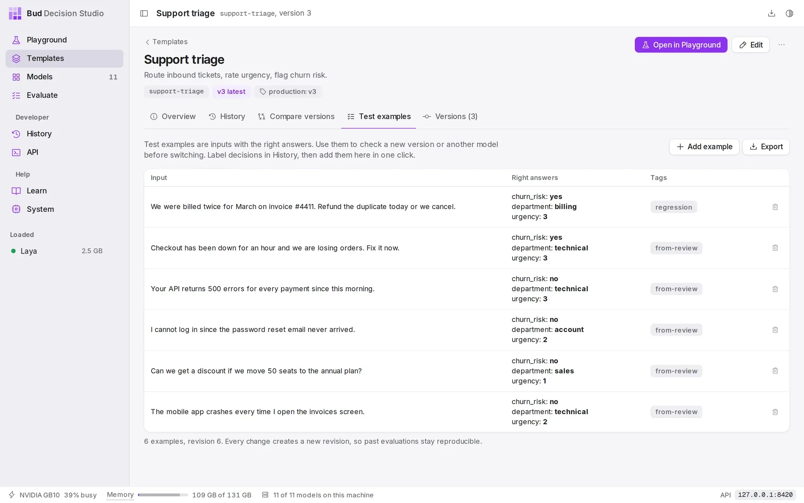
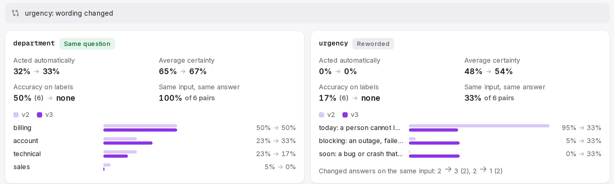
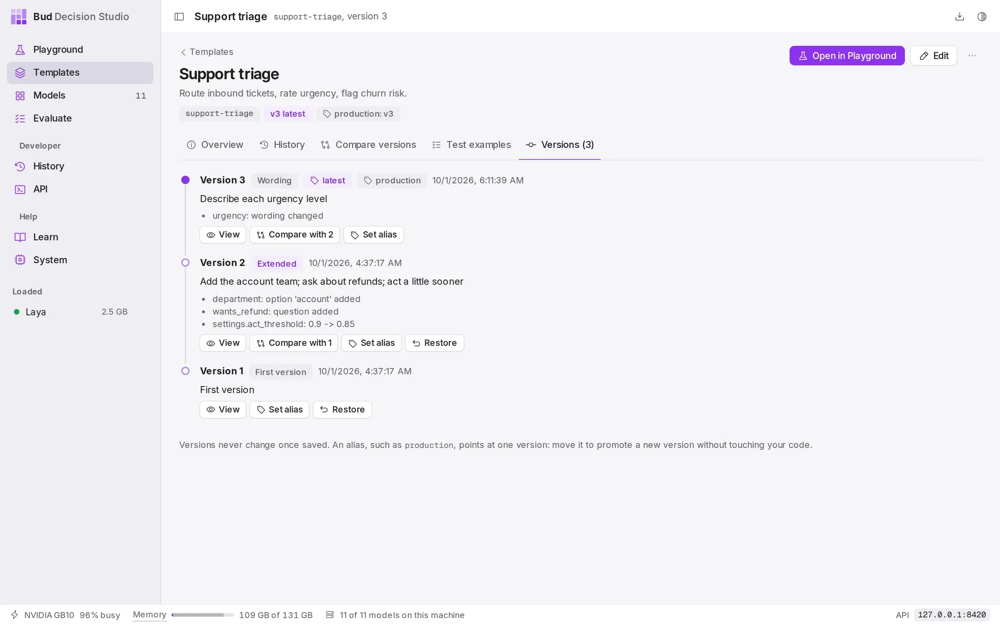

DocsGuides
Improve a template safely
Templates get better with real traffic. This guide finds the question that most often needs a person, rewrites it as a new version, checks it on labelled examples and on real inputs, and moves production to it, with a one-request way back.
The starting point#
This guide continues the support-triage template from the triage guide. It is at version 2, the production alias points at version 2, and your code calls support-. A month of tickets has gone through it, and reviewers have labelled the right answers on some of them in History.
Promoting through an alias is what makes the rest of this guide safe. A new version is used straight away by callers of the bare id support-triage, but callers of support- keep version 2 until you move the alias.
Find the weak question#
The template's statistics break down every question by version: how often it acts on its own, how certain it is on average and, where decisions were labelled, how often it was right. In the app this is the template's History tab; over the API it is the template's stats.
In the response on the right (shortened to version 2), urgency never acts on its own, its average certainty is 49%, and it was right on only one of the six labelled tickets: it answers "today" for almost everything. The department and churn questions are in much better shape. That makes urgency the question to work on.
/v1/studio/templates/{id}/stats curl -s 'http://127.0.0.1:8420/v1/studio/templates/support-triage/stats?version=2'{ "object": "decision.stats", "group_by": ["version"], "groups": [ { "key": {"version": 2}, "count": 16, "act_rate": 0.0, "questions": { "department": {"runs": 16, "mean_certainty": 0.6376, "act_rate": 0.3125, "labelled": 6, "accuracy": 0.5}, "urgency": {"runs": 16, "mean_certainty": 0.4914, "act_rate": 0.0, "distribution": {"2": 0.9375, "3": 0.0625}, "labelled": 6, "accuracy": 0.1667}, "churn_risk": {"runs": 16, "mean_certainty": 0.7838, "act_rate": 0.75, "labelled": 6, "accuracy": 0.8333} } } ]}Turn labelled decisions into test examples#
A test example is an input with its right answers, kept with the template. Examples outlive History's retention, so they are the fixed set you check every new version against.
The quickest way to build the set is from decisions reviewers have already labelled. In the app, open a labelled decision in History, then More, then Add to support-triage's test examples. Over the API, post the decision's id as from_decision; the example takes the decision's variables and its labels.
Every change to the set raises the template's examples_revision, so a result can always say which set of examples it was measured on.

/v1/studio/templates/{id}/examples curl -s http://127.0.0.1:8420/v1/studio/templates/support-triage/examples -d '{ "from_decision": "dec_01M3T951RZ1XJZP9DZT25RD67T", "tags": ["from-review"]}'{ "id": "ex_01M3TEHJ1BS6BVVRFY9ZYZKW0A", "object": "template.example", "template": "support-triage", "revision": 2, "variables": { "customer_message": "Checkout has been down for an hour and we are losing orders. Fix it now.", "account_tier": "enterprise" }, "state": null, "media": [], "expected": {"churn_risk": "yes", "department": "technical", "urgency": "3"}, "tags": ["from-review"], "split": "test", "note": "", "from_decision": "dec_01M3T951RZ1XJZP9DZT25RD67T", "created_at": 1790815291, "updated_at": 1790815291}Save the new version#
The fix is in the wording: describe what each urgency level means, so the model has something to tell "today" from "blocking" by. Wording-only changes keep every question comparable with version 2, so the old and new answers can be charted side by side.
Send only what changes with PATCH, and add If-Match with the version you started from. If someone saved another version in the meantime, the save is refused with 412 version_conflict instead of silently overwriting their work. In the app, the same edit is Edit questions in the Playground, then Save version 3, which checks the version in the same way.
The response, shortened on the right, says "change": "new_version", and production still points at 2.
/v1/studio/templates/{id} curl -s -X PATCH http://127.0.0.1:8420/v1/studio/templates/support-triage \ -H 'If-Match: "2"' -d '{ "questions": { "urgency": { "instructions": "How urgent is this request?", "criteria": ["can wait: a question, a quote or a feature request", "soon: a bug or crash that has a workaround", "today: a person cannot log in or work, or a billing error", "blocking: an outage, failed payments, or the customer threatens to leave"] } }, "note": "Describe each urgency level"}'{ "id": "support-triage", "object": "template", "version": 3, "change": "new_version", "note": "Describe each urgency level", "aliases": {"latest": 3, "production": 2}, "warnings": []}What changed#
Every version records how it differs from the one before. Here the class is wording: only text changed, callers keep working (breaking_for_callers is false), and urgency is text_changed while the other questions are identical. Templates and versions explains each class.
The same PATCH sent again with If-Match: "2" now fails, because the template has moved on to version 3.
/v1/studio/templates/{id}/versions/{n}/diff curl -s 'http://127.0.0.1:8420/v1/studio/templates/support-triage/versions/3/diff?against=2'{ "object": "template.diff", "template": "support-triage", "from": 2, "to": 3, "class": "wording", "breaking_for_callers": false, "questions": { "department": {"comparability": "identical"}, "urgency": {"comparability": "text_changed"}, "churn_risk": {"comparability": "identical"}, "wants_refund": {"comparability": "identical"} }, "summary": ["urgency: wording changed"], "changes": [ {"op": "replace", "path": "/questions/urgency/instructions", "value": "How urgent is this request?"}, {"op": "replace", "path": "/questions/urgency/criteria", "value": ["can wait: a question, a quote or a feature request", "soon: a bug or crash that has a workaround", "today: a person cannot log in or work, or a billing error", "blocking: an outage, failed payments, or the customer threatens to leave"]} ]}Run the examples on both versions#
Run every test example on version 2 and on version 3, and count how often each question gets the labelled answer. The script on the right does that in a dozen lines; metadata tags each decision with its example, so the runs are easy to find in History.
On these six examples, version 3 gets urgency right four times instead of two, and the other questions are unchanged. Six examples are a small sample: enough to catch a mistake, not to prove a small improvement. Grow the set as reviewers label more decisions.
import httpxstudio = httpx.Client(base_url="http://127.0.0.1:8420/v1/studio", timeout=300)examples = studio.get("/templates/support-triage/examples", params={"limit": 100}).json()["data"]for ref in ("support-triage@2", "support-triage@3"): right, total = {}, {} for ex in examples: d = studio.post("/decisions", json={ "template": ref, "variables": ex["variables"], "metadata": {"example_id": ex["id"]}, }).raise_for_status().json() for q, expected in ex["expected"].items(): total[q] = total.get(q, 0) + 1 right[q] = right.get(q, 0) + (d["answers"][q]["decision"] == expected) print(ref, {q: f"{right[q]}/{total[q]}" for q in total})support-triage@2 {'churn_risk': '5/6', 'department': '3/6', 'urgency': '2/6'}support-triage@3 {'churn_risk': '5/6', 'department': '3/6', 'urgency': '4/6'}Compare the versions on the same inputs#
The template's Compare versions tab, and GET /, compare two versions over History: how answers are distributed, how often each acts, how certain it is and, for decisions with labels, how accurate it is.
Because the script ran both versions on identical variables, the comparison can also pair them: Same input, same answer is the share of pairs where the two versions agreed, and the flips list how the answers moved. Here version 3 changed the urgency on four of the six tickets: two moved up to "blocking" and two down to "soon". Departments did not move at all, as expected for a change that only touched urgency.
Accuracy on labels counts decisions that were labelled in History. The example runs are new decisions without labels, so for version 3 it shows "none"; the script above is the measurement for them.

Promote with an alias#
Point production at version 3. Every caller of support- uses version 3 from the next request, with no deploy. The response includes previous_version, so you know where the way back is.
In the app, open the template's Versions tab and choose Set alias on version 3.

latest and production, with its note and the change summary of every version./v1/studio/templates/{id}/aliases/{alias} curl -s -X PUT http://127.0.0.1:8420/v1/studio/templates/support-triage/aliases/production \ -d '{"version": 3}'{ "object": "template.alias", "template": "support-triage", "alias": "production", "version": 3, "previous_version": 2, "updated_at": 1790815431}Roll back#
If version 3 misbehaves in production, move the alias back. It takes effect on the next request, and nothing about version 3 is lost.
Callers of the bare id follow latest, not an alias. To return them to the old behaviour as well, restore version 2: POST / saves its definition as a new version 4 (the response says "change": "new_version"), so the history of versions stays complete. In the app, Restore is on each old version in the Versions tab.
/v1/studio/templates/{id}/aliases/{alias} curl -s -X PUT http://127.0.0.1:8420/v1/studio/templates/support-triage/aliases/production \ -d '{"version": 2}'{ "object": "template.alias", "template": "support-triage", "alias": "production", "version": 2, "previous_version": 3, "updated_at": 1790815468}A routine that keeps working#
- Label decisions that asked a person; that is where the model is weakest and where labels teach the most.
- Promote labelled decisions to test examples, and keep the set growing.
- Change one thing per version, and write a
notethat says why. - Run the examples on the new version and the current production version before moving the alias.
- Watch the comparison on real traffic for a few days after promoting.
To tune the act threshold or the temperature instead of the wording, use the Evaluate page and what-if statistics; see Probabilities, certainty and acting.